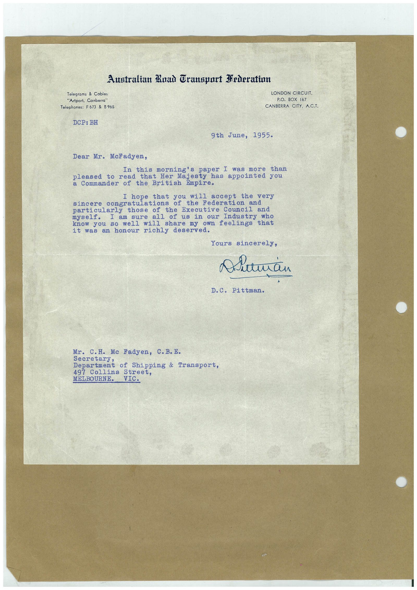

Book 1 · scan 138


Description
Transcription
Context
Review notes
Compare the machine draft with the scan. Handwriting and names need human review.
Artifacts
Edit the artifacts field in this note’s frontmatter to change these records. This summary is generated.
B01-S138-A01 — Letter — Book 1, scan 138
Types: Typed document, Letter
Scope: Whole scanned page; individual items can be split out during review.
Caption: Not mapped yet.
Caption source: Not recorded yet.
Caption status: unmapped
Machine transcription
Australian Ruad Gransport Federation Telegrams & Cables "Artport, Canberra" Telephones: F673 & B 965 DCP: BH LONDON CIRCUIT. P.O. BOX 167 CANBERRA CITY, A.C.T. 9th June, 1955. Dear Mr. McFadyen, In this morning's paper I was more than pleased to read that Her Majesty has appointed you a Commander of the British Empire. I hope that you will accept the very sincere congratulations of the Federation and particularly those of the Executive Council and I am sure all of us in our Industry who know you so well will share my own feelings that it was an honour richly deserved. Yours sincerely, Alieman D.C. Pittman. Mr. C.H. Mc Fadyen, C.B.E. Department of Shipping & Transport, 497 Collins Street, MELBOURNE. VIC.